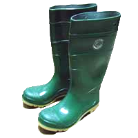

The Barbie doll was invented in 1959 by Ruth Handler (co-founder of Mattel), whose own daughter was called Barbara. Barbie was introduced to the world at the American Toy Fair in New York City. Barbie's job was teenage fashion doll. The full name fo the first doll was Barbie Millicent Roberts, from Willows, Wisconsin.
FEATURE
POSITIONING RELATIVES
In 1958, English pictorial photographer Henry Peach Robinson created the world's first photomontage by combining five different negatives to make one complete print of a young girl on her deatbed. "Fading Away" -- Robinson's first and most famous composite photo -- depicts a young girl dying of consumption and was controversial when it was exhibited, with many believing it was not a suitable subject for photography.
Staying afloat
Lobsterman John Aldridge fell into the shark-infested water of Long Island while his crewmates were asleep. He was kept afloat for more than 12 hours by his rubber boots, which he used as flotation devices. The coast guard rescued him 43 miles south of Montauk where he fell off his vessel.

LIST STYLE: BULLETS.
A ROUND-UP OF POPULAR AMMUNITION
.223
REMINGTON 69gr BTHP
.308
WINCHESTER 168gr BTHP
7.62x39mm RUSSIAN 154gr JSP
7.62
THUMPER 220gr RN
7.62
THUMPER 240gr BTHP
DISPLAYING (FAMOUS) BLOCKS
Abbey Road is a thoroughfare lcoated in the borough of Camden and the City of Westminster in London, running roughly northwest to southeast through St. John's Wood, near Lord's Cricket Ground. It is part of the B507. This road is best known fo the Abbey Road Studios and the 1969 album, Abbey Road, by The Beatles.
BORDER BOTTOM LINE
Awful immigration laws from around the world.
Italy penalizes illegal immigrants with a fine of € 5,000-10,000 and allows immigration officials to detain them for up to 6 months. • Switzerland immediately deports all convicted criminals from other countries andpotentially even their family members. • Australia detains all non-citizens without a valid visa. • Japan is allowed to pay $,3000 to each unemployed Latin American immigrant of Japanese descent and $2,000 to each of that unemployed worker's family members to return to their country of origin. • The United Arab Emirates prohibits foreigners form engaging in any sort of labor union--like activy, resulting in harsh living conditions, 80-hour work weeks, back-breaking manual labor, and below-minimum-wage pay.
TRANSFORMERS
REVENGE OF THE FALLEN
A noisy, underplotted, and overlong special effects extravanganza that lacks a human touch.
ROTTEN TOMATO RATING
20%
WORLD PREMIER
DEN HAAG THEATRETHE NETHERLANDS
JUNE 23, 2011
On the night of Aug 8, 1975, a line of people frantically piled sandbags atop Henan Province's Banqiao Dam while being battered by the worst storm ever recorded in the region. They were in a race with the rapidly rising Ru River to save the dam and the millions of people that lay sleeping downstream. It was a race they were about to lose.Just after the 1:00 am, the sky cleared and stars emerged from behind the storm clouds. There was an eerie calm as someone yelled, "The water level is going down! The flood is retreating!"There was little chance to enjoy that calm. One survivor recalled that a few seconds later it "sounded like the sky was collapsing and the earth was cracking." The equivalent of 280,000 Olympic-sized swimming pools burst through the crumbling dam, taking with it entire towns and as many as 171,000 lives.